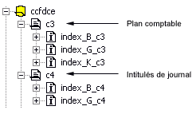
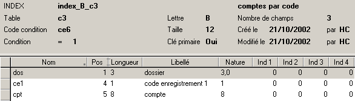
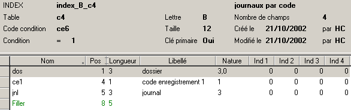

Un index peut définir un accès sur plusieurs tables.
Dans ce cas, il faut définir un index par table avec la même lettre clé et il faut impérativement que tous les index aient la même taille. On rajoutera un Filler si nécessaire.
Exemple
Dans le fichier ccfdce du dictionnaire ccfdd.dhsd, la clé B donne accès aux enregistrements des tables c3 et c4.
La même clé permet donc de lire le plan comptable et les intitulés de journal.

L’index index_B_c3 est défini de la manière suivante

L’index index_B_c4 est défini de la manière suivante

Un Filler de 5 a été ajouté l’index index_B_c4 pour que sa longueur soit exactement la même que celle de index_B_c3.